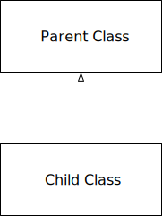
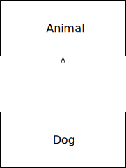

Inheritance is a fundamental concept in OOP, it allows one class to inherit attributes and methods from another class. This promotes code reuse and establishes relationships between classes.

Common phrases used to convey the relationship between the child (subclass) and the parent (superclass) in inheritance

To define a class that inherits from another class, the parent class is passed as an argument in the class definition:
__init__ MethodA child class will use it’s own __init__ constructor if it has one. If not, it will use the parent class’s __init__ constructor.
super() FunctionThe super() function allows you to call methods from the parent class inside the child class. This is especially useful for extending the behavior of the parent class’s methods.
class Parent:
def __init__(self, name):
self.name = name
def display(self):
print(f"Name: {self.name}")
class Child(Parent):
def __init__(self, name, age):
super().__init__(name) # Call the parent constructor
self.age = age
def display(self):
super().display() # Call the parent's method
print(f"Age: {self.age}")Single Inheritance: A child class inherits from one parent class.
Multiple Inheritance: A child class inherits from multiple parent classes.
Multilevel Inheritance: A child class inherits from a parent class, and then another class can inherit from that child class, creating a chain.
Hierarchical Inheritance: Multiple child classes inherit from the same parent class.
_).__).__attr becomes _ClassName__attr.class Parent:
def __init__(self):
self.__private_var = 42
def __private_method(self):
print("This is a private method")
class Child(Parent):
def try_access_private(self):
# This will raise an AttributeError
print(self.__private_var)
self.__private_method()
# Name mangling allows indirect access (not recommended)
print(self._Parent__private_var)
self._Parent__private_method()isinstance() and issubclass()isinstance(): Used to check if an object is an instance of a class or a subclass of that class.issubclass(): Used to check if a class is a subclass of another class.isinstance() + issubclass()class Animal:
def __init__(self, name):
self.name = name
class Dog(Animal):
def __init__(self, name, breed):
super().__init__(name)
self.breed = breed
def speak(self):
return f"{self.name} says Woof!"
class Cat(Animal):
def speak(self):
return f"{self.name} says Meow!"
bowser = Dog("Bowser", "bulldog")
tom = Cat("Tom")
print(isinstance(bowser, Dog))
print(isinstance(bowser, Animal))
print(isinstance(tom, Dog))
print(issubclass(Dog, Dog))
print(issubclass(Animal, Cat)) # notice orderPython follows the Method Resolution Order (MRO) to determine the order in which base classes are searched when looking for a method.
You can check the MRO of a class by inspecting its __mro__ attribute or using the mro() method.
# Inheritance
class Animal:
def __init__(self, name):
self.name = name
class Dog(Animal):
def bark(self):
return f"{self.name} says Woof!"
# Composition
class Engine:
def start(self):
return "Engine started"
class Car:
def __init__(self):
self.engine = Engine()
def start_car(self):
return self.engine.start()